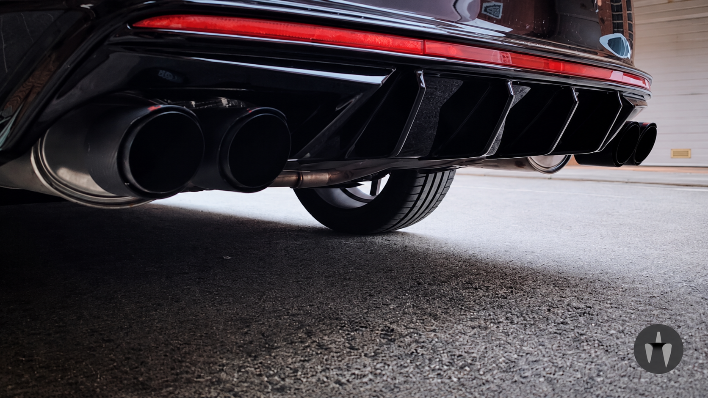

4.ª edición Calçotada VRS
Nos vemos en la próxima quedada del CLUB OCTAVIA VRS CATALUÑA para compartir nuestra pasión por los coches.
- Lugar
- Embolic by moon
- Hora
- 13:00h a 17:00h
CLUB OCTAVIA VRS CATALUÑA
El punto de encuentro para quienes vivimos
la pasión por el Octavia VRS en Cataluña.
01 / EL CLUB
Bienvenidos al club, rodamos juntos, disfrutamos en familia.
Bienvenidos a Škoda Octavia VRS Cataluña, mucho más que un club de coches: somos una gran familia unida por la pasión, la adrenalina y el espíritu deportivo de una máquina que nos hace vibrar: el Škoda Octavia VRS.
Nacimos de una misma pasión, pero con el tiempo hemos descubierto que lo que realmente nos une va mucho más allá de los caballos, el diseño o el rugido de nuestros motores. Nos une la amistad, el compañerismo, las ganas de compartir experiencias y la ilusión de vivir cada kilómetro como una nueva aventura.
Desde las carreteras más espectaculares de Cataluña hasta nuestras quedadas, rutas, almuerzos y grandes encuentros, cada momento se convierte en una historia que merece ser recordada. Aquí compartimos risas, kilómetros, fotografías, experiencias y momentos que transforman a personas con una misma afición en amigos y, finalmente, en familia.
Porque un VRS no solo se conduce, se siente. Y cuando compartes esa pasión con personas que la entienden como tú, cada ruta tiene algo especial y cada encuentro deja huella.
En nuestro club no importa el año de tu coche, su preparación ni su potencia. Lo que realmente importa son las ganas de participar, disfrutar, compartir y formar parte de algo auténtico.
Somos gasolina en las venas, pasión en cada curva y amistad en cada kilómetro. Somos el espíritu VRS recorriendo Cataluña, creando recuerdos y demostrando que los mejores viajes no siempre se miden en kilómetros, sino en las personas que te acompañan.
Esto es Škoda Octavia VRS Cataluña.
Un punto de encuentro para los apasionados. Un lugar donde nacen amistades, se comparten sueños y se construye una familia sobre cuatro ruedas.
Bienvenido a tu club. Bienvenido a tu familia. Bienvenido al espíritu VRS.
🏁 ŠKODA OCTAVIA VRS CATALUÑA — MÁS QUE UN COCHE, UNA FAMILIA.
02 / GARAJE
Los coches que nos reúnen.
Un espacio para compartir cada Octavia.

03 / FOTOS DEL CLUB
Recuerdos y detalles de nuestra pasión.
Entra en la galería para ver los álbumes de eventos.
 01 / CONTACTO CON EL ASFALTO
01 / CONTACTO CON EL ASFALTO 02 / AL VOLANTE
02 / AL VOLANTE 03 / NOMBRE PROPIO
03 / NOMBRE PROPIO
04 / DEPORTIVIDAD HASTA EL FINAL 05 / ESPÍRITU VRS
05 / ESPÍRITU VRS 06 / ORGULLO ŠKODA
06 / ORGULLO ŠKODA 07 / ADN VRS
07 / ADN VRSLA RED DEL CLUB
Encuentra las páginas y redes sociales de quienes colaboran con el club y descubre sitios que merece la pena conocer.
Ver colaboradores y enlaces ↗04 / AGENDA DEL CLUB
Las próximas fechas para volver a encontrarnos.
Elige un mes o pulsa una fecha marcada.
Para crear un evento, pulsa el día de hoy o una fecha futura. Puedes editar los eventos publicados.
Entrar como administrador para añadir eventos| L | M | X | J | V | S | D |
|---|---|---|---|---|---|---|
| Cargando fecha actual… | ||||||
1 quedada anunciada en enero de 2027.
Nos vemos en la próxima quedada del CLUB OCTAVIA VRS CATALUÑA para compartir nuestra pasión por los coches.
05 / MERCADILLO
El mercadillo del club: piezas, recambios y accesorios que los miembros tienen a la venta. Entra para consultar los anuncios y contactar con cada vendedor.
Entrar al mercadillo06 / CIRCUITO DEL CLUB
Ponte al volante desde el interior y completa tres vueltas al circuito. Acelera, frena y busca tu mejor vuelta.
Jugar al simulador ↗CONECTA CON EL CLUB
Telegram, YouTube, Spotify, MyŠkoda, Instagram, Facebook y más. Descubre los enlaces que comparte el club.
Entrar en redes sociales ↗06 / COMUNIDAD
Nuestra pasión también se comparte en Instagram.
Conoce el perfil del club y escríbenos para saber más sobre la comunidad.
El acceso privado de socios llegará en una siguiente fase. Mientras tanto, puedes contactar con el club a través de Instagram.